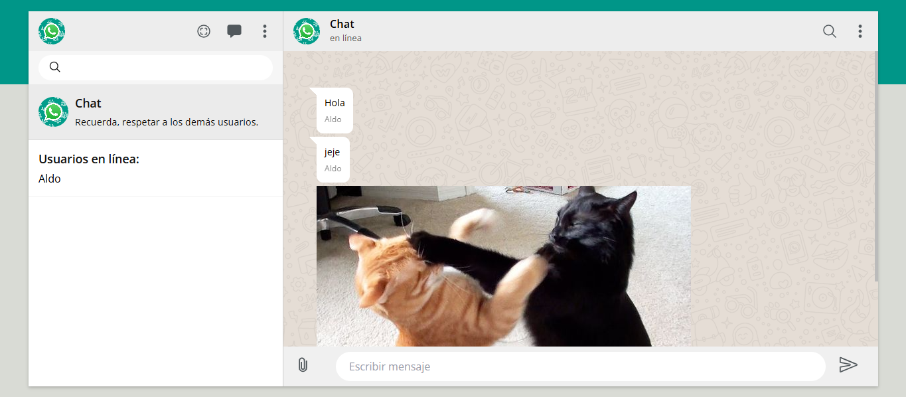
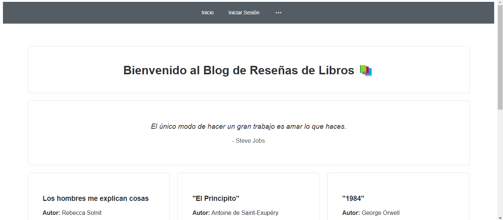
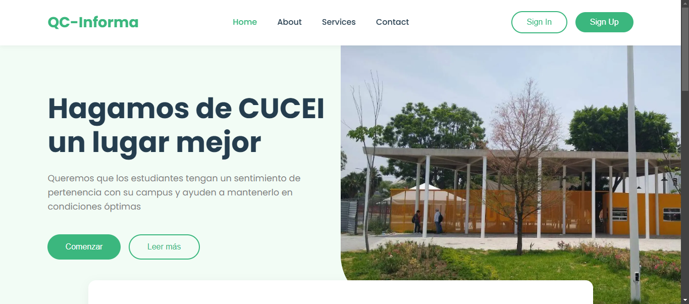
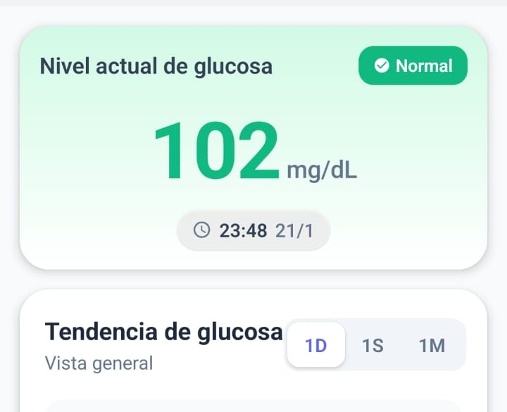

Chat App
Chat en tiempo real utilizando web sockets y estetica de whatsapp. Montado en node js con SQlite para almacenar mensajes.

Book Blog
Página web para crear y guardar reseñas de libros, los usuarios registradors pueden comentar las reseñas y utiliza una API para mostrar frases de escritores. Creada con Vue y autenticación con supabase.

QC Informa
Plataforma web para levantar reportes en el Centro Universitario de Ciencias Exactas e Ingenierías. Hecha con React y nest js, con supabase como base de datos.

Glucosa App
Aplicación destinada a medir la glucosa en la sangre, integrando modelos de inteligencia artificial y machine learning para predecir picos de glucosa en alimentos por medio de una imagen.